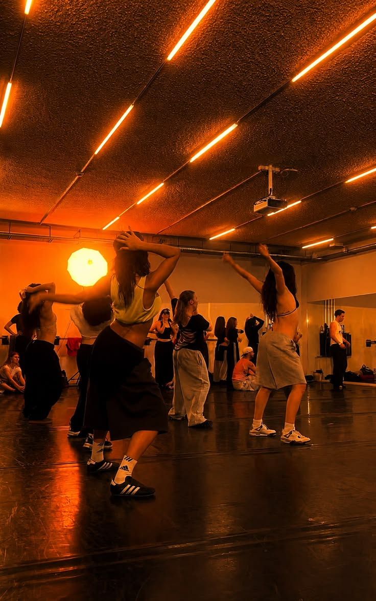
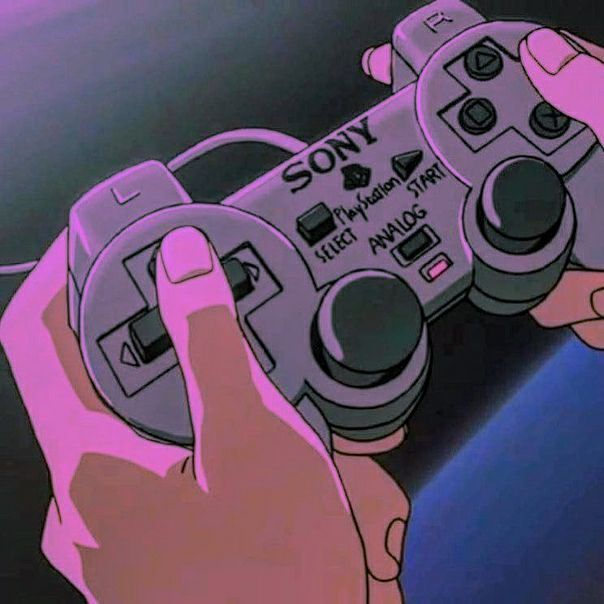
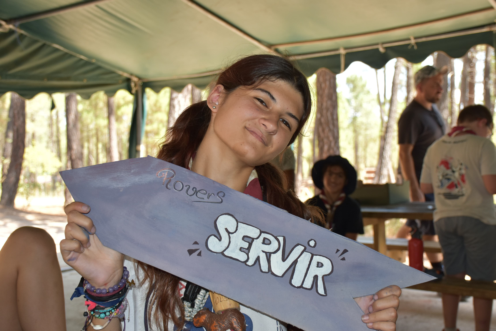
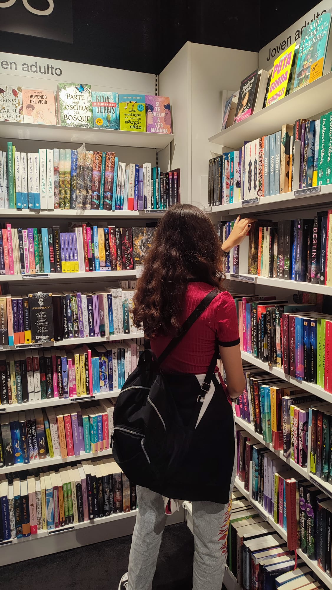
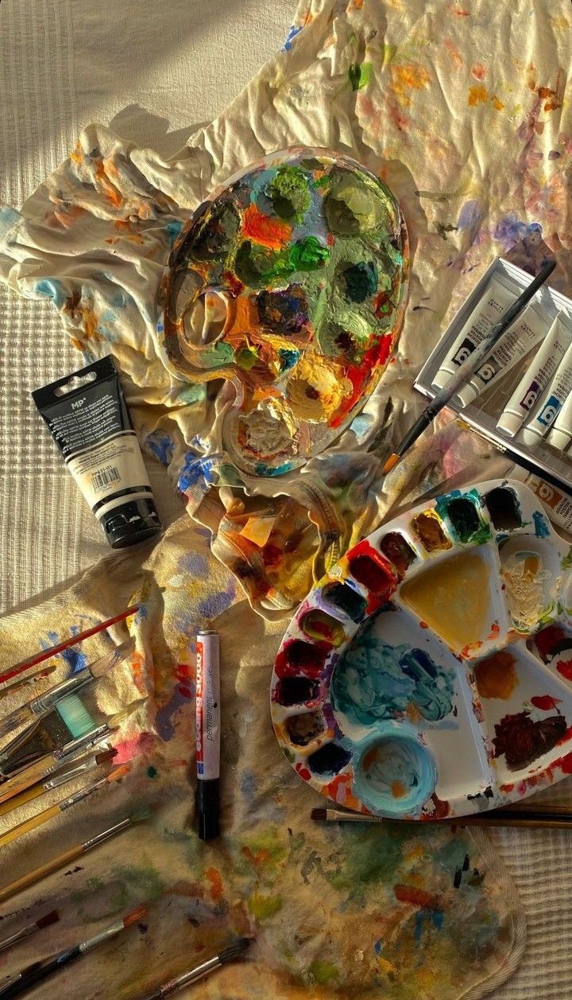
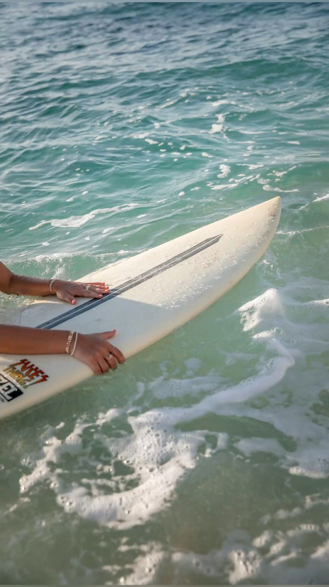

Pulsa en cualquiera de estas tarjetas para entrar en una página propia, con una imagen destacada y una explicación más completa de lo que significa cada afición para mí.
 ↗ Ver más
↗ Ver másFotografía
Me gusta fijarme en los pequeños detalles y encontrar una forma diferente de mostrar lo cotidiano ya que una imagen vale mas que mil palabras.
Explorar esta parte
↗ Ver másBaile
El baile me permite expresarme, aprender movimientos y conectar música y creatividad.
Explorar esta parte
↗ Ver másVideojuegos
Me encantan los videojuegos: disfruto de sus mundos e historias y me da curiosidad cómo se construyen.
Explorar esta parte
↗ Ver másScouts
Formo parte del movimiento Scout desde los 11 años (si mal no recuerdo). Es una parte importante de mi vida . Me ha enseñado liderazgo, compañerismo, asumir responsabilidades, organizacion de eventos y proyectos, entre otras muchas cualidades
Explorar esta parte
↗ Ver másLiteratura
Las historias me permiten descubrir ideas, personajes y perspectivas nuevas.
Explorar esta parte
↗ Ver másCreatividad en común
Me interesa mezclar aficiones y tecnología: convertir una idea en una herramienta, una experiencia o un proyecto propio.
Explorar esta parteCreatividad en común
Me interesa mezclar aficiones y tecnología: convertir una idea en una herramienta, una experiencia o un proyecto propio.
Explorar esta parte
↗ Ver másSurf
Me atrae el surf por la conexión con el mar, la naturaleza y el reto de aprender algo nuevo. Es una forma de desconectar, disfrutar del momento y dejarse llevar por las olas.
Explorar esta parteUna parte de mí también se construye fuera de la pantalla.
Estas aficiones alimentan mi forma de aprender, crear y trabajar con otras personas.